Download anything, your way.
MegaDL is a download manager in the spirit of IDM, for your phone and your PC. Share a link from any app and get music with cover art and lyrics, video at the quality you pick, or any file over several connections with pause and resume. Your phone and PC work together, and a browser extension catches downloads for you.
See it in action
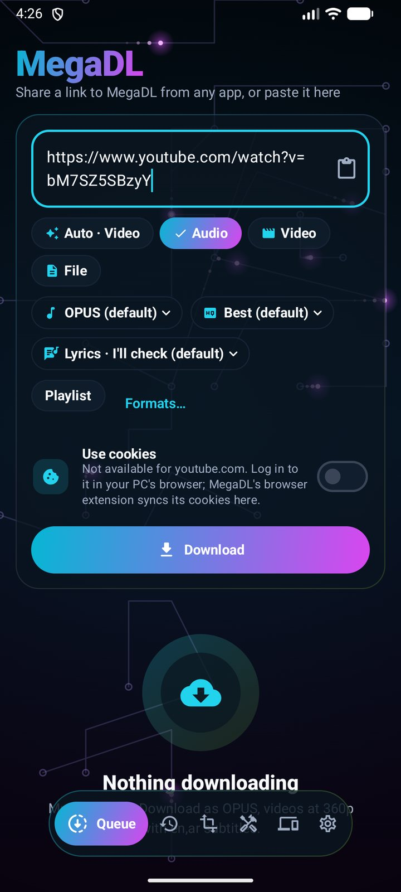
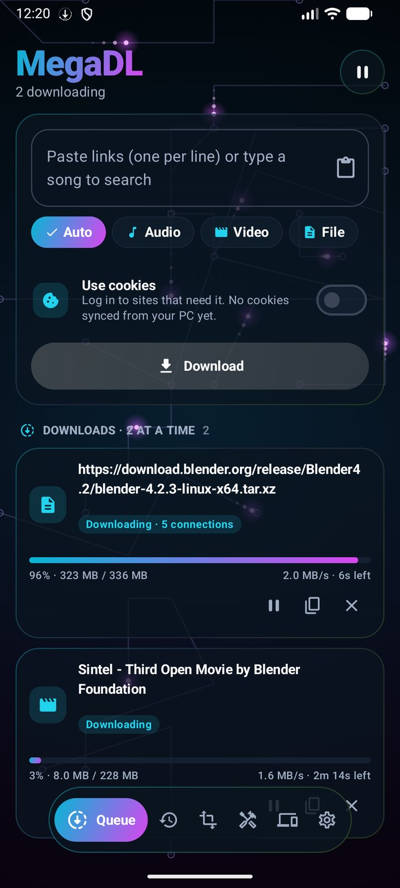
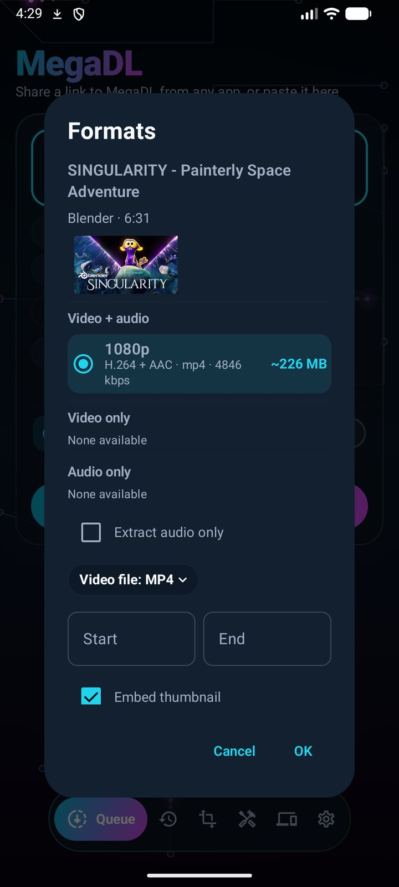
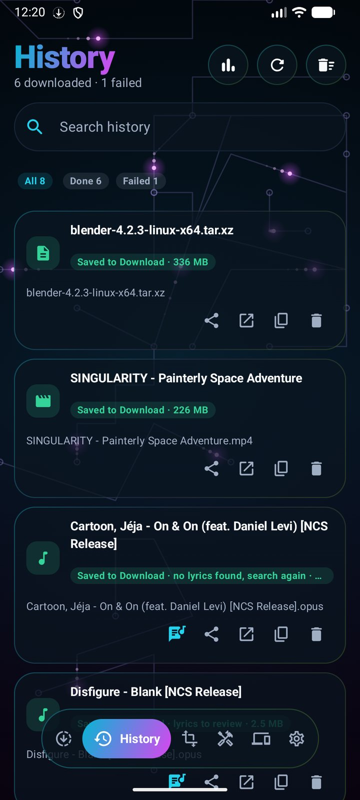
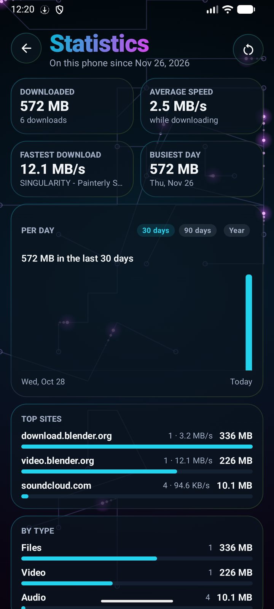
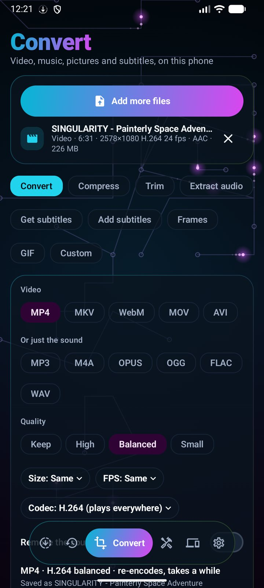
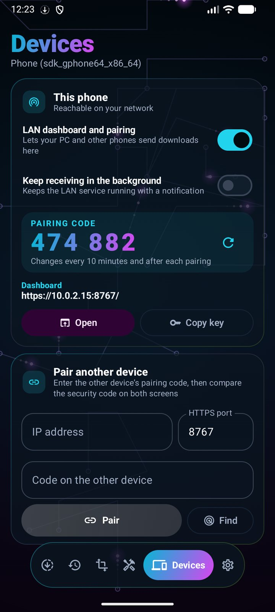
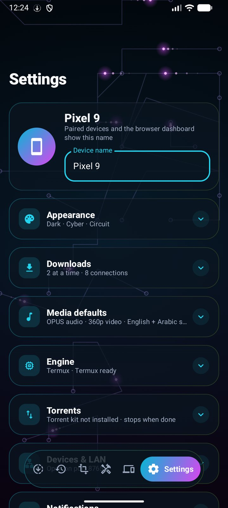
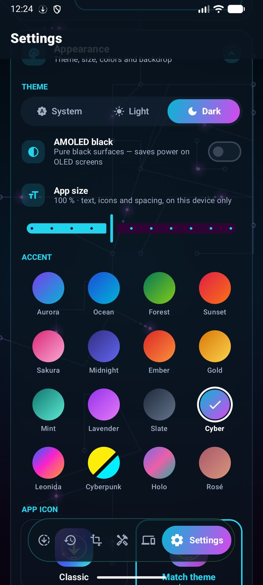
One download manager, every kind of link
Built to be quick to use every day: share a link, pick what you want, and let the queue do the rest.
Share or paste links
Share from any app, or paste a whole list of links at once: YouTube, SoundCloud, any site yt-dlp supports, or direct files. No link? Type a song name to search for it.
Music, ready to play
Opus or MP3, in best quality or small size, with square cover art and metadata. Add synced lyrics from LRCLIB, and check them before they're saved if you like.
Video at your quality
Pick a quality, or open Formats to choose the exact stream: resolution, codec, audio language, even just part of a video. English or Arabic subtitles included.
Fast direct downloads
Direct files download over many connections at once, adding more while they run, with pause and resume that picks up where it stopped.
A queue that keeps going
Several downloads at a time, live speed and time left, a Wi-Fi-only option, retry, and a history you can search and filter.
Convert on the device
Change a video's format or size, compress it, trim a part, pull the sound out, make a GIF, save frames as pictures, or take subtitles out and put them back.
Music tools
Edit title, artist, album and cover for one song or many at once, add synced lyrics to songs you already have, and compress files.
Your statistics
How much you downloaded, your average and fastest speed, your busiest day, a chart per day and your top sites and file types.
Phone and PC together
Pair them on the same Wi-Fi and send a download from one to the other over an encrypted link. Jobs for an offline device wait until it's back.
Browser dashboard
Either app serves a dashboard to browsers on your network over HTTPS, protected by a key.
Stunning themes
16 accent colours, light, dark and AMOLED modes, an app size slider, a glass navigation bar and tidy, collapsible settings groups.
Termux or its own engine
One small APK. It uses the yt-dlp and FFmpeg you already have in Termux, or downloads its own engine once (about 50 MB) when you first need it. Torrents come as an optional kit.
As small or as sharp as you want
Choose small Opus files for your phone, the best quality the site has, MP3 for any player, or a video at the resolution you pick. MegaDL adds cover art and metadata so your music looks right in any player.
Lyrics & subtitles
Synced lyrics from LRCLIB for your songs, and English or Arabic subtitles for your videos.
The same MegaDL, on your PC
Your downloads on the big screen: a live queue that shows every connection, a link grabber for whole pages, RSS feeds, torrents, statistics, a scheduler and the browser extension. An installer for Windows 10 and 11 (x64) that updates itself every 12 hours and keeps your settings.
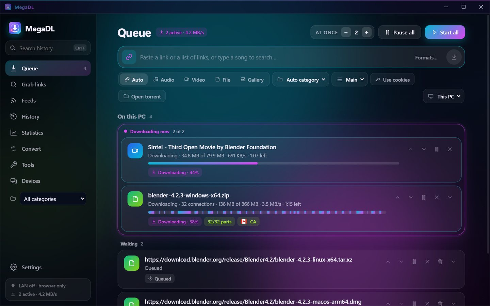
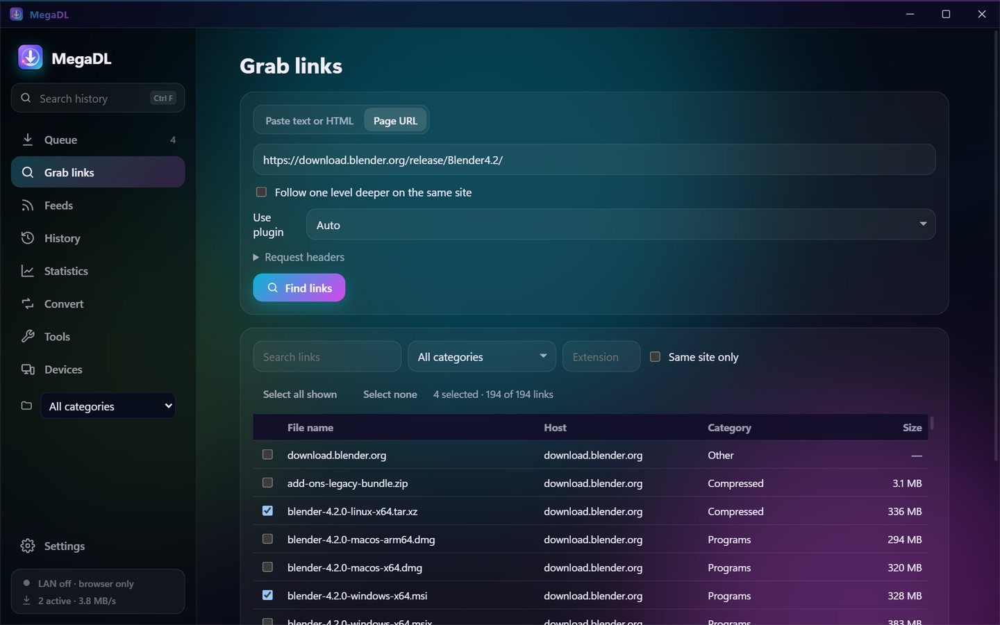
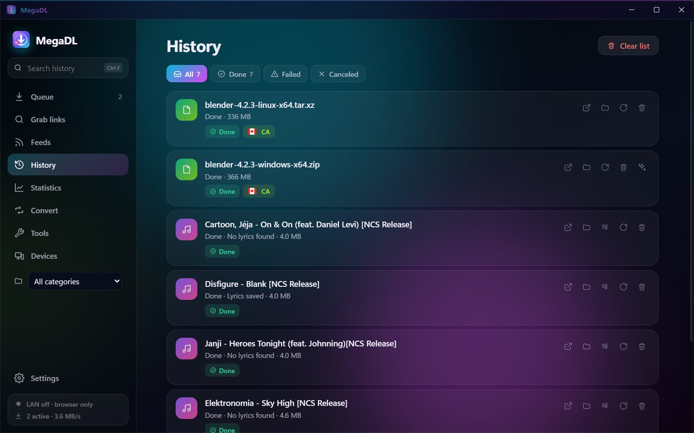
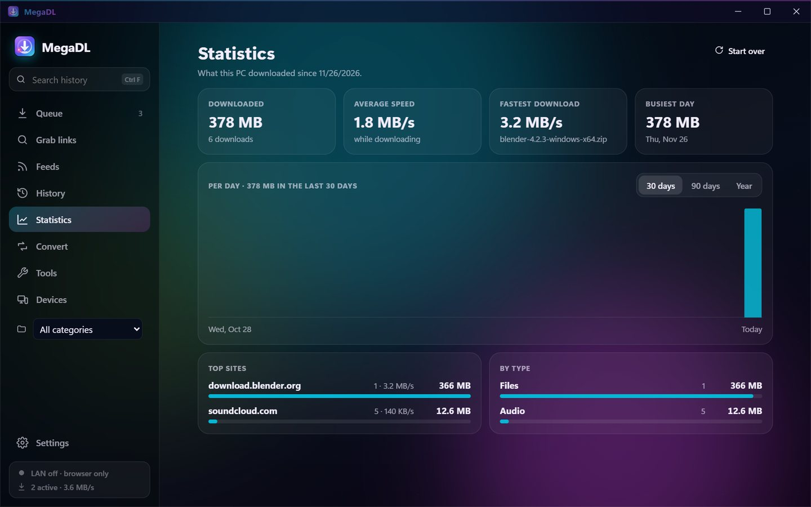
Install your way
Just for you, or for all users on the PC. You can also pick your own folder.
Uses what you have
MegaDL finds yt-dlp and FFmpeg if they're already installed, as programs or through Python. If not, it installs its own.
Schedule it
Several queues, each with its own start and stop times, days and download limit. When they finish, do nothing, exit, sleep or shut down, with 60 seconds to cancel.
A full download manager
Categories with their own folders, a link grabber for whole pages, image galleries, checksums, archive extraction, FTP, torrents and magnet links, and RSS feeds that download new items for you.
Light in the background
Behind other windows, minimized or in the tray, MegaDL stops drawing and checking its screens, so it uses next to no CPU or GPU while your downloads keep going.
Add your own plugins
Point MegaDL at your own script to turn a site's page links into direct downloads, or to pull links out of a page.
Catch downloads right from your browser
For Chrome, Brave and Edge. It hands downloads to MegaDL for Windows, and if MegaDL isn't running, your browser just downloads as usual.
Catches downloads
Downloads you start in the browser go to MegaDL with the page's cookies and referer, so files that need a login still work.
Alt+click any link
Hold Alt and click a link to send it straight to MegaDL.
Media on the page
The extension's popup lists the media on the page you're on.
Get it
Download MegaDL-extension.zip and unzip it, or open MegaDL for Windows → Settings → Browser, which shows the extension folder and the pairing key.
Load it
Open chrome://extensions, turn on Developer mode, choose Load unpacked and pick the extension folder.
Browse as usual
Downloads now go to MegaDL. The extension only talks to MegaDL on your own PC.
Your phone and PC, working together
Pair them over your Wi-Fi and send downloads between them. Nothing goes through the internet or any server.
Pair once
With both on the same Wi-Fi, open the Devices screen and pair your phone and PC.
Send it over
Found something on your phone? Send the download to your PC, or the other way round.
It waits for you
If the other device is offline, the job waits until it's back on your network.
Private by design
No accounts, no analytics and no developer servers. Everything stays on your devices and your own network. MegaDL only goes online to download what you ask for, to fetch lyrics from LRCLIB if you turn them on, to update yt-dlp and its engine tools from their official GitHub releases, and to check GitHub for app updates.
- 🔒 No accounts
- 🚫 No tracking
- 🏠 Stays on your network
- 🔑 Key-protected dashboard
- 💸 Free, no ads
Good to know
Is MegaDL really free?
Yes. It's free, with no ads and no tracking.
Do I need Termux?
No. If you already have yt-dlp and FFmpeg in Termux, MegaDL can use them. Otherwise it downloads its own engine (Python, yt-dlp and FFmpeg, about 50 MB) once, from Settings → Engine or automatically with your first music or video download. Direct file downloads need neither.
How do I install it on Android?
Download the APK on your phone and open it. If Android asks, allow installing apps from your browser or file manager. If you use Termux, MegaDL also asks for permission to run commands in it.
How do I install it on Windows?
Download MegaDL-Setup.exe (Windows 10 and 11, x64) and run it. You can install it just for you or for all users, and choose the folder. MegaDL uses the yt-dlp and FFmpeg you already have (as programs or through Python), or installs its own.
How do I add the browser extension?
Download MegaDL-extension.zip and unzip it, or open MegaDL for Windows → Settings → Browser, which shows the extension folder and the pairing key. Then open chrome://extensions in Chrome, Brave or Edge, turn on Developer mode, choose Load unpacked and pick the folder. If MegaDL isn't running, your browser downloads files normally.
Which sites does it work with?
YouTube, SoundCloud and any other site yt-dlp supports, plus direct links to any file. You can also type a song name to search for it.
How do I send a download from my phone to my PC?
Put both on the same Wi-Fi and pair them from the Devices screen. After that you can send a download from either device to the other. If the other device is offline, the job waits until it's back on your network.
What is the browser dashboard?
MegaDL for Android and for Windows can each serve a dashboard that other devices on your network open in a browser. It's protected by a key, so only people you give the key to can use it.
How do updates work?
On Android, MegaDL checks GitHub for a new version once a day; you'll find it in Settings → Updates. On Windows it checks every 12 hours, installs updates quietly and keeps your settings.
Why isn't it on Google Play?
MegaDL is published directly as an APK on this site and its GitHub releases page.
Can I download anything with it?
MegaDL is a tool, like your browser. You're responsible for downloading only content you have the right to download. See the Terms of Use.
Also try MegaShare and MegaDo

MegaShare: share files with anyone
Send photos, videos, apps and whole folders from your phone to any phone or computer over Wi-Fi or hotspot. They just scan a QR code and download or upload in their browser, with no app, no internet and no account. Watch videos and play music together in sync, and share a text or Wi-Fi password in one tap.

MegaDo: to-dos, notes and reminders
Your to-do list, notes, reminders and clock in one app for Android and Windows. Alarms with snooze, reminders when you arrive somewhere, notes with photos, drawings, voice and Markdown, 77 handy tools including offline live captions and a remote desktop for your PC, and sync between your devices through your own Google Drive.
Get MegaDL today
Free, no ads, no tracking. For Android 7.0 and newer, and Windows 10 and 11 (x64).